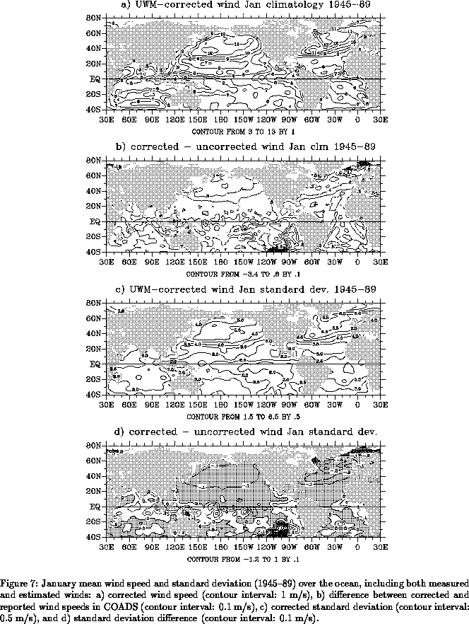

Using individual observations from the COADS Compressed Marine Reports
(CMR-5) analyses of wind speed climatologies have been produced for the
global oceans during the period 1970-89. Computing climatological
wind speeds based on (anemometer) measured and (sea state) estimated
ship reports, the performance of 4 current scientific
Beaufort scales have been analyzed: a) WMO Code 1100, b) CMM-IV (WMO
1970), c) Cardone
(1969), and d) Kaufeld (1981). This analysis confirmed previous
findings that the old WMO Code 1100 scale underestimates lower
wind speeds and overestimates high wind speeds. Nevertheless, the other three
so-called scientific Beaufort equivalent scales have biases of their
own, with the CMM-IV being more accurate for intermediate winds (5-9
m/s).
Having established the need for a new scale, the
following formula is proposed to correct estimated wind speeds in COADS:
where
is wind speed given in COADS based on WMO Code 1100
scale, and
is the corrected estimate at the mean anemometer
height, assumed here to 20 m above sea
level. Note that the above formula is valid only for individual
observations and cannot be applied directly to monthly mean wind
speeds. This proposed correction performs reasonably well for all
seasons, and marginally so in the southern hemisphere, where the poor
sampling gives considerably more scatter compared to the northern
hemisphere. For the month of January, there is also a poor
correspondence between measured/estimated wind speeds in the Indian
ocean. Overall, the new scale produces higher average wind speeds throughout
the globe, and reduced standard deviations. The magnitude of such
corrections is generally larger in July compared to January. In
agreement with Cardone et al. (1990), the artificial long term
increase in wind speed is reduced for most of the globe.
It is important to note that the validity of this correction is dependent on the reliability of flag WI in COADS/CMR-5. (Flag WI allows us to discriminate measured/estimated wind observations). Recently, S. Woodruff (personal communication) has brought to the authors' attention results of some preliminary tests in which some wind reports flagged as measured were determined to be estimated. If such inconsistencies exist in COADS/CMR-5, they have been incorporated in our scale, which effectively brings measured/estimated wind speeds into agreement. To settle this uncertainty regarding the accuracy of the measured/estimated flag, detailed information about the reporting ships is required. Although in principle it is possible to compile some of this metadata, it is a formidable task and such information is not likely to be included in COADS in the near future. As more reliable data becomes available, this analysis will be updated to reflect these changes. In the meantime, we claim that the corrections proposed in here produce a more consistent estimate of COADS wind speed over the global oceans.
